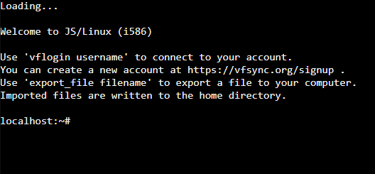
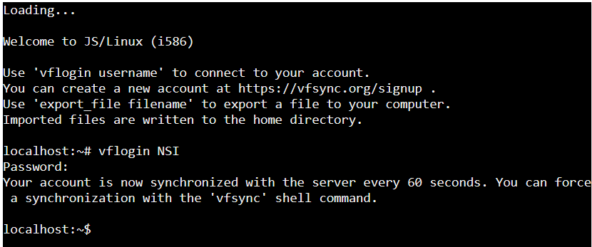
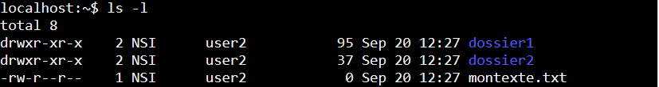
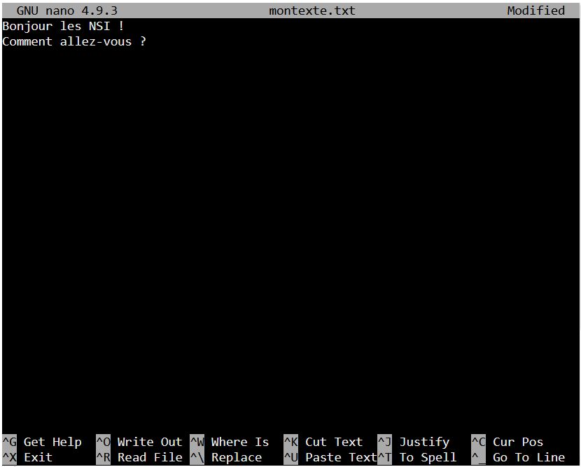

TP2 — Utilisation d’une console shell⚓︎
1. Mise en route⚓︎
Avec le jeu TERMINUS, vous avez découvert un certain nombre de commandes UNIX/Linux de façon ludique.
Ce second TP va vous permettre :
- de réutiliser ce que vous avez appris dans un contexte plus réaliste ;
- de découvrir d’autres commandes et options.
Pour cela, nous allons utiliser un émulateur en ligne.
Étapes⚓︎
-
Connectez-vous sur :
https://bellard.org/jslinux -
Cliquez sur "click here" sur la première ligne (Alpine Linux 3.23.2).

-
Connectez-vous sur :
https://vfsync.org/signup
-
Créez un compte en choisissant :
-
un User name
-
un Password
-
Revenez sur le terminal.
-
Saisissez :
vflogin username
puis appuyez sur Entrée
- Saisissez votre mot de passe.
Attention
Le mot de passe n’apparaît pas à l’écran. C’est normal.

2. Prise en main des commandes UNIX/Linux de base⚓︎
2.1 Arborescence de fichiers⚓︎
L’arborescence de fichiers représente l’organisation des dossiers et fichiers sur un ordinateur.
Exemple :
/
└── home
└── NSI
├── dossier1
│ └── fichier1.txt
│ └── fichier2.txt
├── dossier2
└── montexte.txt
Dans cet exemple :
montexte.txtest situé dans/home/NSIfichier1.txtest situé dans/home/NSI/dossier1
Commandes utiles⚓︎
| Commande | Description |
|---|---|
pwd |
Affiche le répertoire courant |
mkdir dossier |
Crée un dossier |
touch fichier.txt |
Crée un fichier vide |
mv fichier.txt dossier |
Déplace un fichier |
mv fichier1 fichier2 |
Renomme un fichier |
cp fichier1 fichier2 |
Copie un fichier |
ls |
Liste le contenu du dossier |
cd dossier |
Entre dans un dossier |
cd .. |
Revient au dossier parent |
cd ~ |
Retourne au dossier personnel |
rm fichier.txt |
Supprime un fichier |
rmdir dossier |
Supprime un dossier vide |
rm -r dossier |
Supprime un dossier non vide |
Astuce
Utilisez fréquemment pwd pour vérifier votre position dans l’arborescence.
Exercice 2.1⚓︎
1.⚓︎
Tapez :
pwd
Vérifiez que la réponse est de la forme :
/home/votre_login
2.⚓︎
À l’aide des commandes précédentes, recréez l’arborescence de l’exemple.
3.⚓︎
a)⚓︎
Créez :
- un fichier
test.txt - deux répertoires
livre1etlivre2
b)⚓︎
Dupliquez test.txt en :
test1.txttest2.txt
c)⚓︎
Déplacez test1.txt dans livre1
d)⚓︎
Vérifiez le contenu de chaque répertoire
e)⚓︎
Effacez les deux répertoires livre1 et livre2
2.2 Gérer les droits⚓︎
Affichage détaillé⚓︎
ls -l
Affiche le contenu du dossier de façon détaillée.
ls -al
Affiche également les fichiers cachés.
Lecture d’un affichage⚓︎
Exemple :

Dans l’ordre cela donne de gauche `a droite : droits - nombre de liens - nom du propriétaire - nom du groupe - taille en octet - date - heure - nom du fichier ou du répertoireLes systèmes de type UNIX sont des systèmes multi-utilisateurs. Plusieurs utilisateurs peuvent donc partager un même ordinateur.
Comme chaque utilisateur possède un environnement de travail qui lui est propre, chaque utilisateur possède certains droits lui permettant
d’effectuer certaines opérations et pas d’autres. Le système d’exploitation permet de gérer ces droits trés finement.
Il faut cependant distinguer un utilisateur un peu particulier qui est autorisé à modifier tous les droits : ce "super utilisateur" est appelé "administrateur" ou "root".
Au lieu de gérer les utilisateurs un par un, il est possible de créer des groupes d’utilisateurs. L’administrateur peut alors attribuer des droits à un groupe au lieu d’attribuer des droits particuliers à chaque utilisateur.
Remarque : dans l’exemple donné ci-dessus, le nom du groupe est user2 et celui du propriétaire NSI.
Signification des droits :
-→ fichierd→ dossier
Puis trois groupes de droits :
| Droit | Signification |
|---|---|
r |
lecture |
w |
écriture |
x |
exécution |
- |
droit absent |
Exemple⚓︎
Pour le fichier montexte.txt on a les droits -rw-r--r-- :
- le premier caractère
-indique que c’est un fichier (pour un répertoire on aurait eu d) ; - le premier
rw-indique que propriétaire peut lire et écrire sur ce fichier mais il ne peut pas l’exécuter ; - le deuxième
r--indique que tous les utilisateurs du groupe peuvent lire sur ce fichier, mais ni écrire dessus, ni l’exécuter ; - enfin
r--indique que tous les autres utilisateurs peuvent uniquement lire le fichier.
Modifier les droits⚓︎
Pour changer les droits d’un fichier ou dossier, on utilise la commande chmod suivi d’un nombre composé de 3 chiffres puis du nom du fichier concerné. Pour savoir quel nombre on choisit il suffit de savoir compter en binaire. Par exemple :
- rwx correspondra au nombre binaire 111 donc au nombre entier 7;
- rw- correspondra au nombre binaire 110 donc au nombre entier 6;
- r-- correspondra au nombre binaire 100 donc au nombre entier 4
Exercice 2.2⚓︎
1⚓︎
Quel nombre choisir pour qu’un fichier soit :
- lisible par propriétaire et groupe
- exécutable par tous
- modifiable uniquement par le propriétaire
2⚓︎
Changez les droits de dossier2 en :
rwxrw-r--
3⚓︎
Tapez :
chown --help
À quoi sert cette commande ?
2.3 Éditer et écrire dans des fichiers⚓︎
Utilisation de nano⚓︎
Ouvrir un fichier :
nano montexte.txt
Vous obtenez un éditeur de texte dans le terminal.

Raccourcis utiles⚓︎
| Raccourci | Action |
|---|---|
Ctrl + O |
Enregistrer |
Ctrl + X |
Quitter |
Le prompt affichant le nom de la machine disparaît ; vous avez à la place une page blanche où vous pouvez taper du texte. Le nom du fichier que vous éditez et le nom de l’éditeur sont affichés en haut. La liste des commandes disponibles est écrite en bas.
Exercice 2.3⚓︎
1⚓︎
Ouvrez :
nano montexte.txt
2⚓︎
Écrivez un texte puis quittez en enregistrant.
2.4 Commandes de fichiers⚓︎
Commande cat⚓︎
Saisie libre⚓︎
cat
Terminer avec :
Ctrl + D
Lire un fichier⚓︎
cat fichier.txt
Écrire dans un fichier⚓︎
cat > fichier.txt
Exercice 2.4⚓︎
Tester chacune de ces commandes dans l’émulateur.
2.5 Commandes de processus⚓︎
Voir les processus actifs⚓︎
top
Quitter avec :
q
Exécuter un script Python⚓︎
python essai.py
Forcer l’arrêt d’un processus⚓︎
kill -9 1234
Attention
kill -9 détruit immédiatement le processus ciblé.
Exercice 2.5⚓︎
1⚓︎
Lancez :
top
2⚓︎
Créez le script suivant :
for i in range(20):
print(i)
3⚓︎
Exécutez-le.
4⚓︎
Relancez :
top
3. Travail à rendre⚓︎
Vous ne devez pas rendre tous les exercices précédents.
Seul l’exercice suivant est à rendre.
Exercice 3.1 — À rendre⚓︎
Arborescence :
/
├── bin
│ ├── bash
│ └── cat
├── home
│ ├── alice
│ └── bob
│ ├── documents
| | ├── images
| | | └── logo.png
│ │ ├── musique
│ │ | ├── classique
│ │ | └── rock
│ │ | ├── track1.mp3
│ │ | └── track2.mp3
│ │ ├── videos
│ │ └── mon_roman.docx
│ └── tmp
├── etc
└── usr
Questions⚓︎
-
Si je suis dans
documents, qu’affichepwd? -
Depuis
images, quelle commande permet d’aller dansmusique? -
Différence entre :
cp test1.txt test2.txt
et
mv test1.txt test2.txt
- Que se passe-t-il avec :
rm videos
documents ?
-
Quelle commande pour supprimer
rock? -
Quelle commande affiche les droits de
mon_roman.docx? -
Quelle commande pour que seul le propriétaire puisse lire et modifier
mon_roman.docx(sans exécution) ? -
Quelle(s) commande(s) permettent d’éditer un fichier texte ?
-
Comment exécuter
prog.py? -
Quelle commande affiche les processus en cours ?
Objectif
À la fin de ce TP, vous devez être autonome pour :
- naviguer dans l’arborescence
- créer/modifier/supprimer fichiers et dossiers
- gérer les droits
- éditer des fichiers
- exécuter des scripts
- observer les processus
````